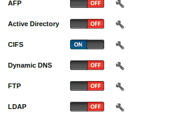

- Módulo: Fundamentos de Hardware
- Título del trabajo Almacenamiento NAS
- Componentes del grupo: Isabel Quintero Sánchez
- Curso Académico: 2013/2014
- Fecha de entrega: 29 de Abril de 2014
Preparar la MV
Instalar FreeNAS
Primera configuración de FreeNAS
Al quitar el disco, volvemos a encender el sistema y nos encontramos el menú de inicio.
Empezamos con la configuración de red pulsando el número 1(IP, máscara de red).
Pulsamos 4 para configurar la puerta de enlace.
Pulsamos 5 para configurar (static Routes).
Pulsamos 6 para configurar el servidor DNS.
Para comprobar que ha funcionado correctamente la configuración entramos desde un navegador con la IP de FreeNas y hacemos un ping para confirmar.
Crear un volumen
Vamos a crear un VOLUMEN a partir de los dos discos creados de 2GB, elegimos la opción mirror (RAID1) con los dos discos y el montaje en "/mnt/volumen1", con anterioridad debemos crear el directorio "/mnt/volumen1", para montar el volumen.
Activamos el servicio de carpetas compartidas "CIFS"
Entramos en la Shell y ejecutamos los siguientes comandos:
df -hT
"mkdir /mnt/volumen1/public";"chmod 777 /mnt/volumen1/public"
Creamos un recurso compartido CIFS. Path a "/mnt/volumen1/public".
Comprobar desde cliente
Probamos que podemos acceder a dicho recurso compartido SMB/CIFS, desde otro equipo de la red. Por ejemplo, usando un cliente Windows.